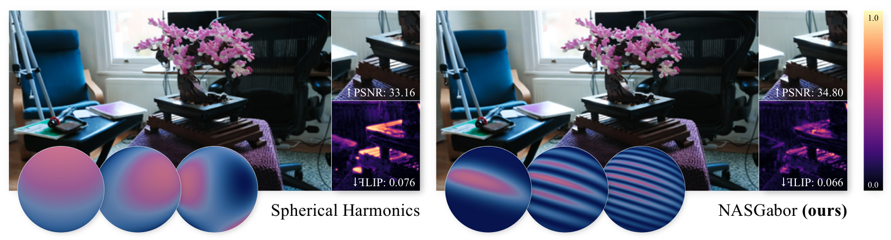
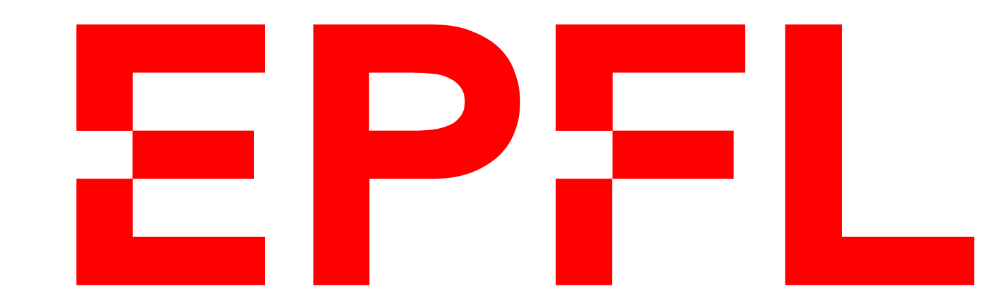
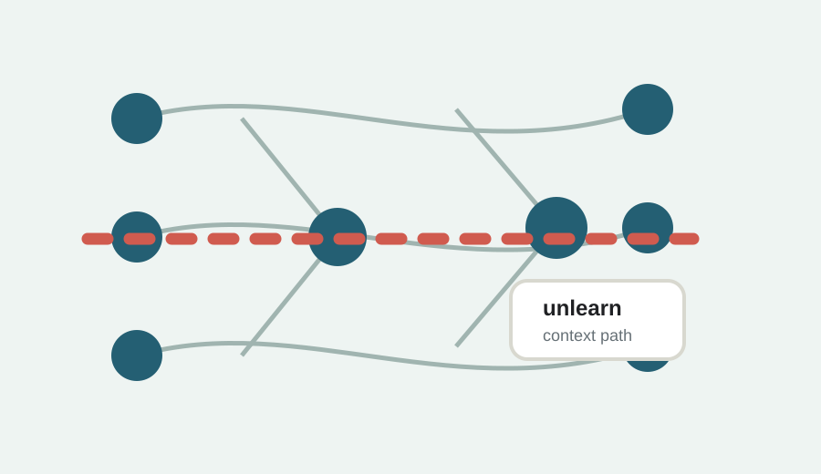
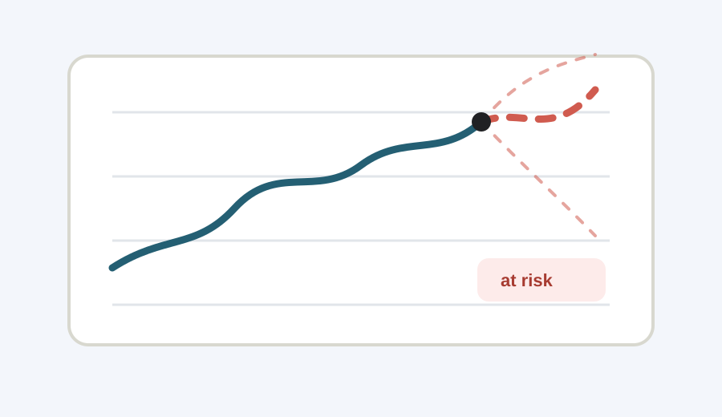
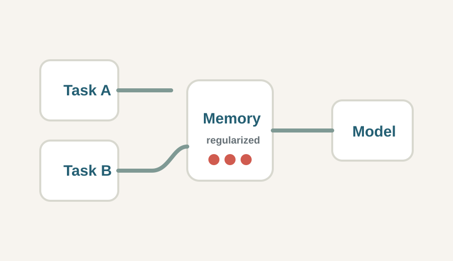

Computer Vision Researcher
Ewa Miazga
I am an M.Sc. student in Data Science at EPFL, specializing in efficient 3D reconstruction, point-based scene representations, and Gaussian Splatting. My current research focuses on appearance modeling for novel view synthesis, with an emphasis on realistic rendering and efficient gradient-based optimization. I enjoy building publication-oriented research projects, from problem formulation and method design to implementation, experimentation, and validation. I am currently looking for a Master’s internship for Autumn 2026 or Spring 2027.
3D reconstruction
Gaussian Splatting
appearance models

News
Attending EGSR 2026 conference in Bordeaux
Beyond SH accepted to Computer Graphics Forum journal
Started an internship at Computer Graphics Group, USI under supervision of prof. Piotr Didyk
Publications

Beyond Spherical Harmonics: Rethinking Appearance Models for Radiance Reconstruction
Ewa Miazga, Jorge Condor, Piotr Didyk
Bordeaux, France
Education

Sep. 2024 - Jul. 2026
Ecole Polytechnique Federale de Lausanne (EPFL)
MSc Data Science, specialization in Computer Vision and Computer Graphics.
GPA: 5.36/6
Lausanne, Switzerland
Sep. 2021 - Jun. 2024
Ecole Polytechnique Federale de Lausanne (EPFL)
BSc Computer Science. Bachelor thesis: Continual Learning.
GPA: 5.22/6, thesis: 6/6
Lausanne, Switzerland
Experience
Computer Vision Lab Intern
Universita della Svizzera italiana (USI), Lugano, Switzerland
Proposed NASGabor, a kernel for modeling complex spherical structures, and developed an appearance model within a 3D Gaussian Splatting pipeline.
AI Lab Student Intern
EPFL, Lausanne, Switzerland
Developed computer vision models for depth estimation and graph-based geometric object representations from limited real-world data.
Junior Software Engineer
Redge Technologies, Warsaw, Poland
Developed a C++/Qt application for OTT data-stream monitoring, improving system reliability and administrator user experience.
Former Projects
Open highlighted projectEPFL - CV Lab
3D Reconstruction
Proposed a dynamic Gaussian densification and attention-aware optimization method to improve novel object reconstruction quality in 3D scenes.
Published page
EPFL - Yale Lab
Unlearning in LLMs
Evaluated AdaLoRA and Wise frameworks on Llama and Meditron for context-dependent unlearning in large language models.

EPFL - Robotics
Interactive Piano Exoskeleton
Built a 3D-printed interactive prototype to help pianists with targeted muscle-memory training during a fast-paced interdisciplinary sprint.

EPFL - ML for Forecasting
Student Risk Forecasting
Built a forecasting model for a Swiss EdTech startup to identify students at risk of academic failure, with attention to bias-aware data pipelines.

EPFL BSc Thesis
Continual Learning Techniques
Researched EWC and Familiarity AutoEncoders to mitigate catastrophic forgetting while reducing computational costs in neural network training.